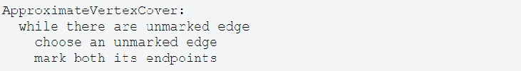

An algorithm that uses random numbers to decide what to do next anywhere in its logic is called Randomized Algorithm.. For example, in Randomized Quick Sort, we use random number to pick the next pivot (or we randomly shuffle the array). And in Karger’s algorithm, we randomly pick an edge.
An approximation algorithm returns a solution to a combinatorial optimization problem that is provably close to optimal (as opposed to a heuristic that may or may not find a good solution). Approximation algorithms are typically used when finding an optimal solution is intractable, but can also be used in some situations where a near-optimal solution can be found quickly and an exact solution is not needed.
Many problems that are NP-hard are also non-approximable assuming P≠NP. There is an elaborate theory that analyzes hardness of approximation based on reductions from core non-approximable problems that is similar to the theory of NP-completeness based on reductions from NP-complete problems; we will not discuss this theory in class but a sketch of some of the main results can be found in (Vijay V. Vazirani, Approximation Algorithms, Springer, 2001), which is also a good general reference for approximation. Instead, we will concentrate on some simple examples of algorithms for which good approximations are known, to give a feel for what approximation algorithms look like.
In any combinatorial optimization problem, there is some objective function we are supposed to optimize. The approximation ratio (or approximation factor) of an algorithm is the ratio between the result obtained by the algorithm and the optimal cost or profit. Typically this ratio is taken in whichever direction makes it bigger than one; for example, an algorithm that solves for a cost of $2 an instance of a problem that has an optimal cost of $1 has approximation ratio 2; but an algorithm that sells 10 airplane tickets (a profit of 10) when the optimum is 20 also has approximation ratio 2.
An algorithm with approximation ratio k is called a k-approximation algorithm; both algorithms above would be called 2-approximation algorithms.
When the approximation ratio is close to 1, it is often more useful to look at the approximation error, which is defined as the approximation ratio minus 1. So an algorithm that always got within 1.01 of the optimal cost or profit would have a 1% approximation error.
A family of algorithms that can achieve any constant approximation error in polynomial time is called a polynomial-time approximation scheme or PTAS. A family of algorithms that can achieve any approximation error ε>0 in time polynomial in both 1/ε and n is called a fully polynomial time approximation scheme or FPTAS. Fully polynomial-time approximation schemes are the holy grail of approximation algorithms; they do not appear to exist for many problems, but when they are available, they are often almost as useful as an optimizing algorithm would be.
In general, proving that an algorithm gives a good approximation ratio is hard. It's not enough to prove that the algorithm's output is good (which we usually know how to do); you also have to show that the optimum is not much better. This takes us into the realm of proving lower bounds, which can be tricky when we can't figure out what the optimum should be. Most of the time a crude lower bound can be obtained from the structure of the problem (see the VERTEX COVER approximation below); occasionally the solution method also helps (for example, a fractional solution to a linear program gives a lower bound on the quality of the best integer solution).
The minimum vertex cover problem on a graph asks for as small a set of vertices as possible that between them contain at least one endpoint of every edge in the graph. It is known that vertex cover is NP-hard, so we can't really hope to find a polynomial-time algorithm for solving the problem exactly. Instead, here is a simple 2-approximation algorithm:
To show that this gives a 2-approximation, consider the set E' of all edges the algorithm chooses. None of these edges share a vertex, so any vertex cover must include at least |E'| vertices. The algorithm marks 2|E'| vertices.